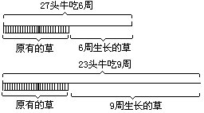
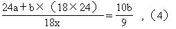

第九讲 “牛吃草”问题
有这样的问题.如：牧场上有一片匀速生长的草地，可供27头牛吃6周，或供23头牛吃9周.那么它可供21头牛吃几周？这类问题称为“牛吃草”问题。
解答这类问题，困难在于草的总量在变，它每天，每周都在均匀地生长，时间愈长，草的总量越多.草的总量是由两部分组成的：①某个时间期限前草场上原有的草量；②这个时间期限后草场每天（周）生长而新增的草量.因此，必须设法找出这两个量来。
下面就用开头的题目为例进行分析.（见下图）

从上面的线段图可以看出23头牛9周的总草量比27头牛6周的总草量多，多出部分相当于3周新生长的草量.为了求出一周新生长的草量，就要进行转化.27头牛6周吃草量相当于27×6＝162头牛一周吃草量（或一头牛吃162周）.23头牛9周吃草量相当于23×9=207头牛一周吃草量（或一头牛吃207周）.这样一来可以认为每周新生长的草量相当于（207-162）÷（9-6）=15头牛一周的吃草量。
需要解决的第二个问题是牧场上原有草量是多少？用27头牛6周的总吃草量减去6周新生长的草量（即15×6=90头牛吃一周的草量）即为牧场原有草量。
所以牧场上原有草量为27×6-15×6=72头牛一周的吃草量（或者为23×9-15×9=72）。
牧场上的草21头牛几周才能吃完呢？解决这个问题相当于把21头牛分成两部分.一部分看成专吃牧场上原有的草.另一部分看成专吃新生长的草.但是新生的草只能维持15头牛的吃草量，且始终可保持平衡（前面已分析过每周新生的草恰够15头牛吃一周）.故分出15头牛吃新生长的草，另一部分21-15=6（头）牛去吃原有的草.所以牧场上的草够吃72÷6=12（周），也就是这个牧场上的草够21头牛吃12周.问题得解。
例2 一只船发现漏水时，已经进了一些水，水匀速进入船内.如果10人淘水，3小时淘完；如5人淘水8小时淘完.如果要求2小时淘完，要安排多少人淘水？
分析 与解答这类问题，都有它共同的特点，即总水量随漏水的延长而增加.所以总水量是个变量.而单位时间内漏进船的水的增长量是不变的.船内原有的水量（即发现船漏水时船内已有的水量）也是不变的量.对于这个问题我们换一个角度进行分析。
如果设每个人每小时的淘水量为“1个单位”.则船内原有水量与3小时内漏水总量之和等于每人每小时淘水量×时间×人数，即1×3×10＝30.
船内原有水量与8小时漏水量之和为1×5×8=40。
每小时的漏水量等于8小时与3小时总水量之差÷时间差，即（40-30）÷（8-3）=2（即每小时漏进水量为2个单位，相当于每小时2人的淘水量）。
船内原有的水量等于10人3小时淘出的总水量-3小时漏进水量.3小时漏进水量相当于3×2=6人1小时淘水量.所以船内原有水量为30-（2×3）=24。
如果这些水（24个单位）要2小时淘完，则需24÷2＝12（人），但与此同时，每小时的漏进水量又要安排2人淘出，因此共需12+2＝14（人）。
从以上这两个例题看出，不管从哪一个角度来分析问题，都必须求出原有的量及单位时间内增加的量，这两个量是不变的量.有了这两个量，问题就容易解决了。
例3 12头牛28天可以吃完10公亩牧场上全部牧草，21头牛63天可以吃完30公亩牧场上全部牧草.多少头牛126天可以吃完72公亩牧场上全部牧草（每公亩牧场上原有草量相等，且每公亩牧场上每天生长草量相等）？
分析 解题的关键在于求出一公亩一天新生长的草量可供几头牛吃一天，一公亩原有的草量可供几头牛吃一天。
12头牛28天吃完10公亩牧场上的牧草.相当于一公亩原来的牧草加上28天新生长的草可供33.6头牛吃一天（12×28÷10＝33.6）。
21头牛63天吃完30公亩牧场上的牧草，相当于一公亩原有的草加上63天新生长的草可供44.1头牛吃一天(63×21÷30＝44.l）。
一公亩一天新生长的牧草可供0.3头牛吃一天，即
（44.l-33.6）÷（63-28）=0.3（头）。
一公亩原有的牧草可供25.2头牛吃一天，即
33.6-0.3×28=25.2（头）。
72公亩原有牧草可供14.4头牛吃126天.即
72×25.2÷126=14.4（头）。
72公亩每天新生长的草量可供21.6头牛吃一天.即
72×0.3=21.6（头）。
所以72公亩牧场上的牧草共可以供36（=14.4＋21.6）头牛吃126天.问题得解。
解：一公亩一天新生长草量可供多少头牛吃一天？
（63×2i÷30-12×28÷10）÷（63-28）=0.3（头）。
一公亩原有牧草可供多少头牛吃一天？
12×28÷10-0.3×28=25.2（头）。
72公亩的牧草可供多少头牛吃126天？
72×25.2÷126+72×0.3=36（头）。
答：72公亩的牧草可供36头牛吃126天。
例4 一块草地，每天生长的速度相同.现在这片牧草可供16头牛吃20天，或者供80只羊吃12天.如果一头牛一天的吃草量等于4只羊一天的吃草量，那么10头牛与60只羊一起吃可以吃多少天？
分析 由于1头牛每天的吃草量等于4只羊每天的吃草量，故60只羊每天的吃草量和15头牛每天吃草量相等，80只羊每天吃草量与20头牛每天吃草量相等。
解：60只羊每天吃草量相当多少头牛每天的吃草量？
60÷4＝15（头）。
草地原有草量与20天新生长草量可供多少头牛吃一天？
16×20=320（头）。
80只羊12天的吃草量供多少头牛吃一天？
（80÷4）×12=240（头）。
每天新生长的草够多少头牛吃一天？
（320-240）÷（20-12）=10（头）。
原有草量够多少头牛吃一天？
320-（20×10）＝120（头）。
原有草量可供10头牛与60只羊吃几天？
120÷（60÷4+10-10）＝8（天）。
答：这块草场可供10头牛和60只羊吃8天。
例5 一水库原有存水量一定，河水每天均匀入库.5台抽水机连续20天可抽干；6台同样的抽水机连续15天可抽干.若要求6天抽干，需要多少台同样的抽水机？
解：水库原有的水与20天流入水可供多少台抽水机抽1天？20×5=100（台）。
水库原有的水与15天流入的水可供多少台抽水机抽1天？6×15=90（台）。
每天流入的水可供多少台抽水机抽1天？
（100-90）÷（20-15）=2（台）。
原有的水可供多少台抽水机抽1天？
100-20×2=60（台）。
若6天抽完，共需抽水机多少台？
60÷6＋2=12（台）。
答：若6天抽完，共需12台抽水机。
例6 有三片草场，每亩原有草量相同，草的生长速度也
设第三片草场（24亩）可供x头牛18周吃完，则由每头牛每周吃草量可列出方程为：

x＝36
答：第三片草场可供36头牛18周食用。
这道题列方程时引入a、b两个辅助未知数.在解方程时不一定要求出其数值，在本题中只需求出它们的比例关系即可。